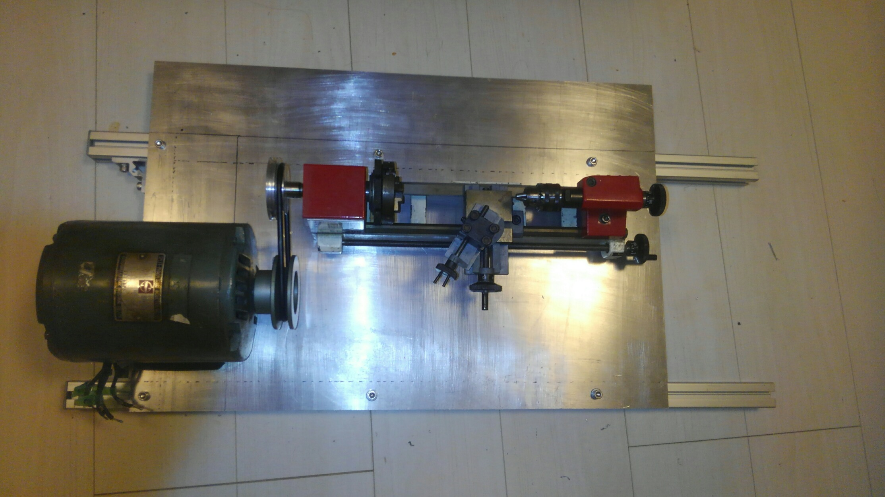

klis 卒業雑枠アドベントカレンダーの記事です
前回までのあらすじ＊１
[ミニミニ旋盤を手に入れた]
やることは決まっています。
モーターを換装して、よりハイパワーな旋盤にします。
モーターとかアルミ板がどこから出てきているのかは気にしてはいけません。 生えてきました。
とりあえずは土台となる板を用意してそれを基準に設計していきます。
今回はアルミ板を使っていきます。
実際にモーターと旋盤台をアルミ板の上に置き、位置を決定していきます。
↓位置決定の様子
アルミ板の下にアルミ棒で骨組みを作る形状にするため、アルミ棒の配置も決めていきます。
アルミ棒は長さの揃ったいい感じのものが何本か手に入ったのでそれを使っていきます。
モーターと台座は裏側からネジで止めるため、下手をするとアルミ棒と干渉してしまいます。
アルミ棒同士を固定するための部品は、自作できないわけではないのですが、横着して既製品を買っています。
↓位置決めの様子
部品同士が干渉したり、変な部分が出っ張ったりしないように気を付けて部品を仮組し、マジックで線を引きます。
今回の形状は動力部分が手前側に来ていて工具の安全性上、bestとは言い難いです。
しかし、送り台のツマミが手前に出っ張るとひっかけたりする可能性があるので台座を板の中央部に配置するとモーターの位置は手前側になります。
印を付けたところにボール盤で穴を開けていきます。
ここで問題が発生しました。私の私物のボール盤では懐が浅すぎて穴をあけることができないポイントがありました。
↓とどかない…
しょうがないので、使わせてもらっている近くの作業場まで行き、一回り大きいボール盤(一応、このボール盤も私の私物。この作業の数週間後に私の部屋に運び込まれた。)で穴をあけました。
[懐が浅い]みたいな問題はハンドドリルを使えば解決するように思いますが、金属加工レベルになるとトルクのせいで「持ち手側」が振り回される可能性が大きくなってくるので安全面からあまり使いたくないですね。
とりあえずは穴とモーターの足、土台の穴の位置があっているか確認していきます。
穴の位置がずれていないか実際に部品を置いて確認↓
次にはアルミ棒、アルミ板、モーター、旋盤台をすべて組み合わせて、[ネジ、先入れ角形ナット,ワッシャー]で固定していきます。
構造上、アルミ板の上側からも下側からもアクセスする必要があるので、椅子をつかってジャッキアップ(???)してます。
↓明らかに本来の用途外に使われている椅子
裏側の様子、こういう作業写真を撮っておくとあとから役立つ
最後にゴムベルトを取り付けて、大枠は完成しました。
図らずもアルミ棒が飛び出している部分は持ち手として機能しています。
アルミ板に大幅に遊びがありますがこの大きさの板はそうそう手に入るものではないので、下手に切断したくないのでそのままです。
私物のボール盤でアクセスできなかった穴も、こちら側の板を切ればどうにかなったんですけどね。(本音を言うと切るのがタルかった。)
次は電装系です。
端子台をとりつけ、スイッチを組み、その辺のPC用ケーブルを流用しました。
一度電源を止め、ケーブル部分を確認すると一部がボロボロになっています。
おそらくケーブルが電圧に耐えられなかったのではないかと推測できます。
確認のためもう一度試運転します。
今度は煙が出るとともにケーブルが
耐久性が高いケーブルを使い組みなおします。
今度はしっかり稼働しました。
しかし、この裸配線状況はあまりにも危ないのでスイッチボックスを付けます。

はやる気持ちが抑えきれずにスイッチボックスの完成を待たずに仮稼働させます。
稼働しました!!
喜び勇んで色々いじりながら動かしたところ,チャックの爪がはじけ飛びました。
危ね～～!!チャック部分を浅くしてしまい爪が外れるのは旋盤でたまに聞く事故です…。*2
とはいえそんな異常なほど浅くしたわけつもりではなかったのですが、モーターを換装した結果、かなり強く遠心力がかかったようです。
スイッチボックス云々以前に可動部分にカバーを付けないとかなり危険ですね。
なんにせよ、スイッチボックス取り付けを完成させます。
↑この状態可動はするのですが、チャック部分が外れ飛ぶのが怖すぎるのでカバーを付けます。
カバーを付けたらまず期待通りにカバーが機能するかを確認します。
一度、チャックの爪部分を浅くして試運転し、カバーが吹き飛んだ爪のストッパーとして機能することを確認します。
👉ヨシッ

“とりあえず”とついているのは安全対策上はまだ完璧に完成しているわけではないからです。
カバーがチャック部分だけについてますが本当はモーターの側にもカバーを付けるべき(最初はその案でした)です。
試運転時にモーター側よりチャック側の方に問題があったので最終的にこのような構造になっています。
作業者のいる場所はモーター側より送り台側のはずなので、チャック側の問題の方が優先度が高いとの考えでチャック部分にカバーをつけていますが可動部分全体を覆うべきです。
⚠:個人の責任で色々やってますが安全管理上は推奨されないことも多くおこなっています。
(まず、”旋盤をばらしてモーター入れ替えよう”という時点で色々マズい)
真似して指が飛んでも私は知らないので真似する人は自己責任でやってください。
たまに[図書館に興味があってはいったはずだけどそこまで図書館好きじゃなかったと気づいた]みたいな人が進路迷子、専攻迷子しているのを見かけます。
そういう人にこういう明らかにklisとは関係ない技術を扱う人もいるんだと知ることが何かの助けになれば幸いです。*2
私の同期は最近[春日エリアに花を植えるんだ!]と園芸にいそしんでいるようです。
*1 前回など存在しない。旋盤は機械加工のための道具。おおざっぱにいうとろくろを横向きにした構造でこれ一個あると大体の円形の加工ができる。
*2チャックor爪:試料をつかんで固定するための部品。
*3送り台:試料を削るための固定刃をスライドさせる部分のスライドする部位。
*4おまえ、slis以外の院に進学しただろうとかいうツッコミはありそう。ゆるして。
ついでに念のため述べておくと私は高専へんにゅうとかではない文系の入り方をした人間です。